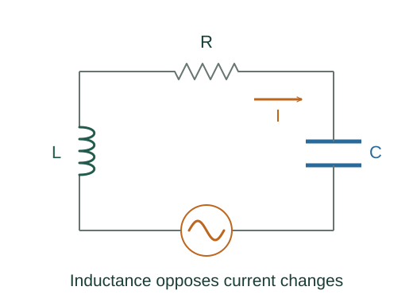

Derive impedance and resonance in a series RLC circuit
In AC, inductor and capacitor voltages are out of phase with current. Their amplitudes cannot be added like DC resistor drops; their phase-aware sum gives impedance.
What the symbols mean
ω: driving angular frequency; R, L, C: series circuit elements; Z: impedance magnitude (Ω); Vmax, Imax: sinusoidal peak amplitudes.
When this applies
Sinusoidal steady state in an ideal linear series RLC circuit with R > 0; transients have decayed.
Developing the argument

Take current as the phase reference
For I = Imax cos ωt, the resistor voltage follows I, the inductor voltage leads by 90°, and the capacitor voltage lags by 90°.
Subtract opposite reactive contributions
The inductive and capacitive voltage phasors point opposite each other. Their difference is perpendicular in phase to the resistive voltage.
Find the amplitude of the sum
Apply Pythagoras in the phasor plane. Dividing total voltage amplitude by current amplitude defines the impedance magnitude.
Set the reactive part to zero
At resonance the inductor and capacitor voltages cancel in their sum. The source then sees only R, and current amplitude is largest for a fixed voltage source.
A closer lookWhy does the same LC frequency appear in free oscillation? ↗Derive LC oscillation frequencyA worked example
For R = 30 Ω and net reactance X = 40 Ω, Z = 50 Ω. A 100 V peak source produces a 2 A peak current.
Derivation behind this calculation ↗A point to keep straight
Keep peak values and RMS values consistent. Average resistor power is Irms²R, which equals ½Imax²R.
Check the assumptions and derivation ↗